Download SQL Server 2005 SP3:
Filename: SQLServer2005SP3-KB955706-x86-ENU.exe
Download URL: SQL Server 2005 SP3 - KB955706 - x86 - ENU
The last Service Pack include all fix in other older Service Pack
Execute: SQLServer2005SP3-KB955706-x86-ENU.exe
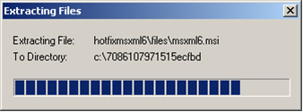
In the Welcome dialog box, click the Next button:
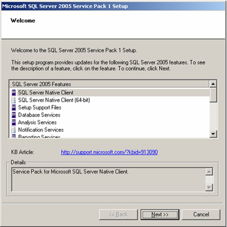
In the End User License Agreement dialog box, read the license agreement very carefully, select the I accept the licensing terms and conditions checkbox, then click the Next button:
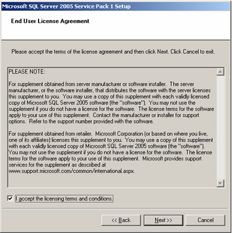
In the Feature Selection dialog box, click the Next button:
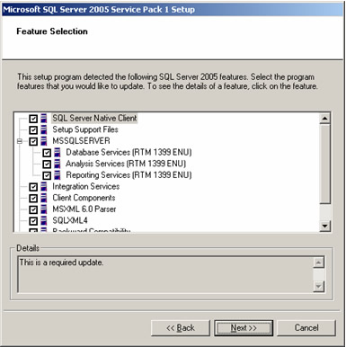
In the Authentication Mode dialog box, select All instances: Windows Authentication, then click the Next button:
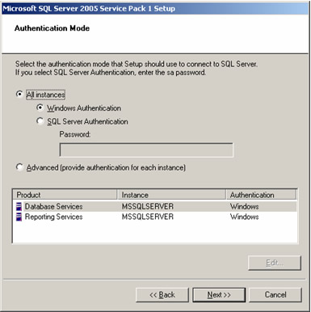
In the Ready to Install dialog box, click the Install button:
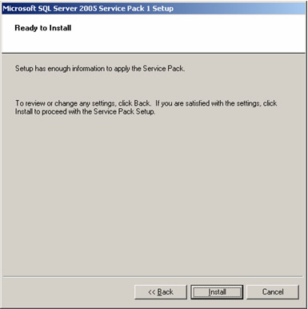
If the Pending Reboot Files Found dialog box appears, click the Yes button:
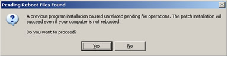
If the Locked Files Found dialog box appears, click the Continue button:
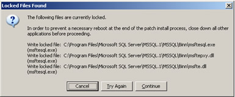
If the Computer Reboot Required dialog box appears, click the OK button:
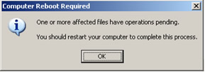
When the component installations are complete, click the Next button:
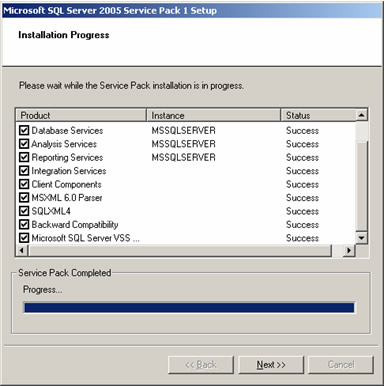
In the Installation Complete dialog box, click the Finish button:
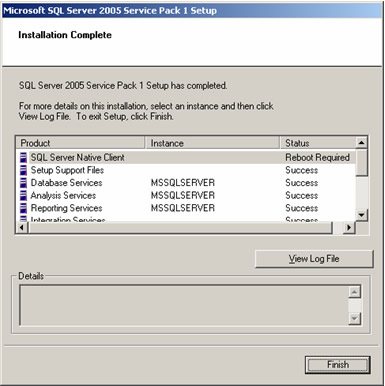